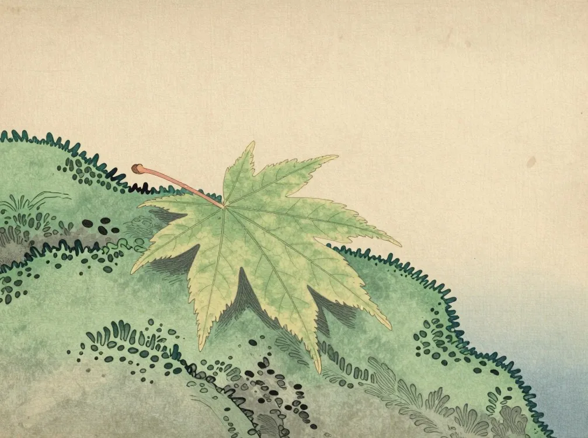
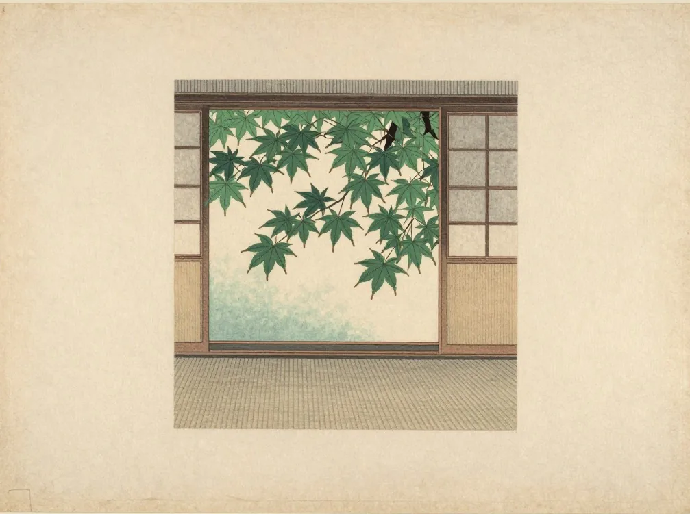
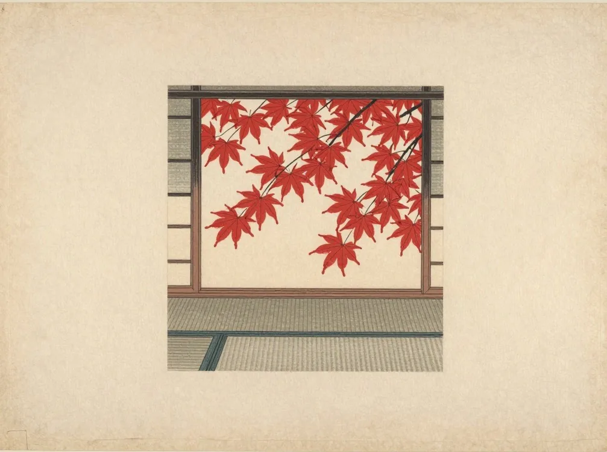
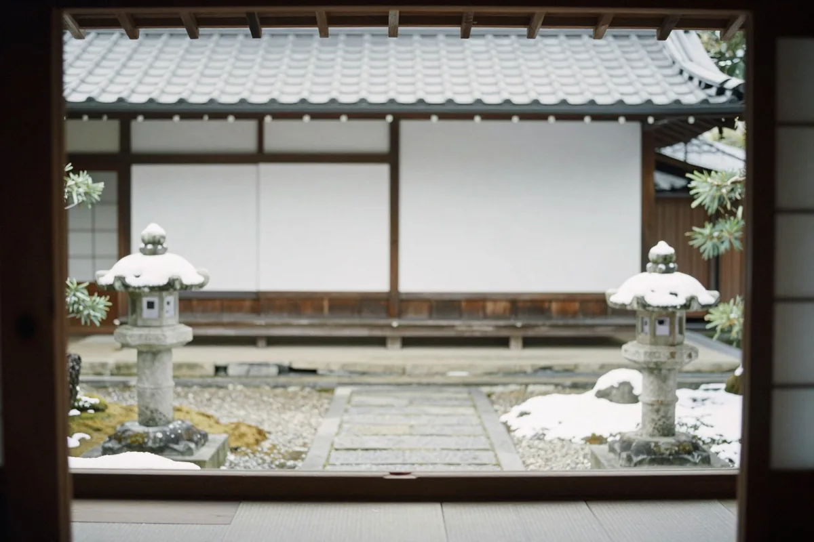

第五章
季節が巡るたび、
訪れたくなる宿。
同じ宿でも、季節ごとにまったく違う顔になります。周辺をめぐらなくても、宿で過ごす時間そのものが、旅になります。
芽吹く山々と、やわらかな朝の空気
朝の縁側で、湯上がりのお茶を。
雪解けの水が流れ込み、谷の緑が日ごとに濃くなります。朝の空気はやわらかく、湯上がりの縁側が、いちばん心地よい時間です。

深い緑と、渓流の涼やかな音
川風の通る縁側で、夕涼みを。
深い緑の影が、窓の外に涼しさをつくります。渓流の音を聞きながら、日が落ちるのを待つ、静かな夏です。

色づく木々と、静かな夕暮れ
紅葉を映す露天で、夕暮れを待つ。
谷が少しずつ色づいていきます。夕暮れの空と木々の色が、湯に映る時間は、一日のなかでも特別です。

雪景色と、湯けむりに包まれる時間
雪の降る音を聞きながら、湯へ。
雪が音をやわらげ、谷はいっそう静かになります。湯けむりの向こうに降る雪を眺める、冬だけの時間です。
